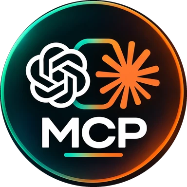

ClauGPT MCP
Liga a sua conta do ChatGPT ao Claude deste computador: imagens e ícones 3D, artes a partir de referências, recorte de fundo perfeito e uma segunda opinião.
- Claude Desktop instalado e logado
- Assinatura do ChatGPT Plus, Pro ou Team
- Login com código de dispositivo ativo chatgpt.com → Configurações → Segurança
Leva de 5 a 10 minutos.
Preparando
Etapa 1 de 80%
Pode deixar esta janela aberta e voltar daqui a pouco. Se o Windows pedir permissão para o Node.js, clique em Sim.
Pronto para usar
O ChatGPT está ligado no seu Claude. Num chat novo, peça por exemplo:
Gera com o ChatGPT um ícone 3D de um foguete, sem fundo
O Claude fecha e abre de novo, já com o ChatGPT ligado. Conversas abertas são interrompidas.
A instalação não terminou
Quase sempre basta tentar de novo: o instalador pula o que já ficou pronto.
Se continuar dando erro, mande o registro para o Claude que ele diz o que fazer.